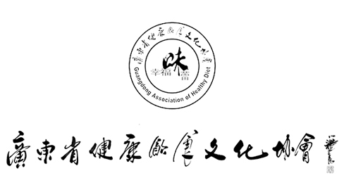
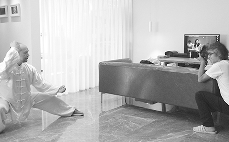

广东省健康饮食文化协会
一，协会成立与发展
2013年由企业家、学者、医生、艺术家等社会精英发起成立了幸福味蕾俱乐部；2016年7月31日，俱乐部正式升级为具有法人资质的省级协会：广东省健康饮食文化协会。 经过近7年的发展，协会已成立17个专业委员会，6个大V及会员俱乐部，协会主办文化主题活动达50多届，会员聚会百余次，会员企业走访百余次，资助贫困儿童数百人次。协会大力促进会员企业机构资源对接，搭建优质文化交流平台！
二，协会的宗旨：创新演绎广东饮食文化，助力提升广东软实力！

治会理念
【格局】我们是“有品德、有思想、有格局，有情怀”的企业家平台。
【信任】我们是会员信任和资源真正无缝对接的全面信任平台。
【追求】我们是美食文化探寻与传播平台
协会文化
2019年活动计划
01月29，DIY美食嘉年华（已完成）
03月29，阳光酒店年会
04月12--16丽江美食之旅
04月下旬，现代化康养企业联谊
05月10--15敦煌戈壁挑战赛
05月底，国际文化联谊，意大利时装秀
06月走进广州中医药博物馆，传统文化教育
07月，党建工作，上海嘉兴参观中共一大会址接受历史教育
08月，中国美食文化走进肯尼亚，中肯美食文化论坛
09月，失聪儿童感恩走访（教师节）
10月庆祝中华人民共和国成立70周年摄影大赛，曁运动会
12月，南极中国科考站慰问新年团拜（走进南极）